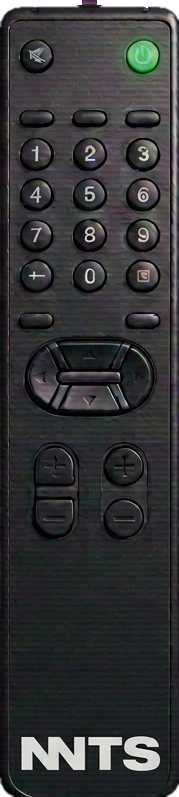
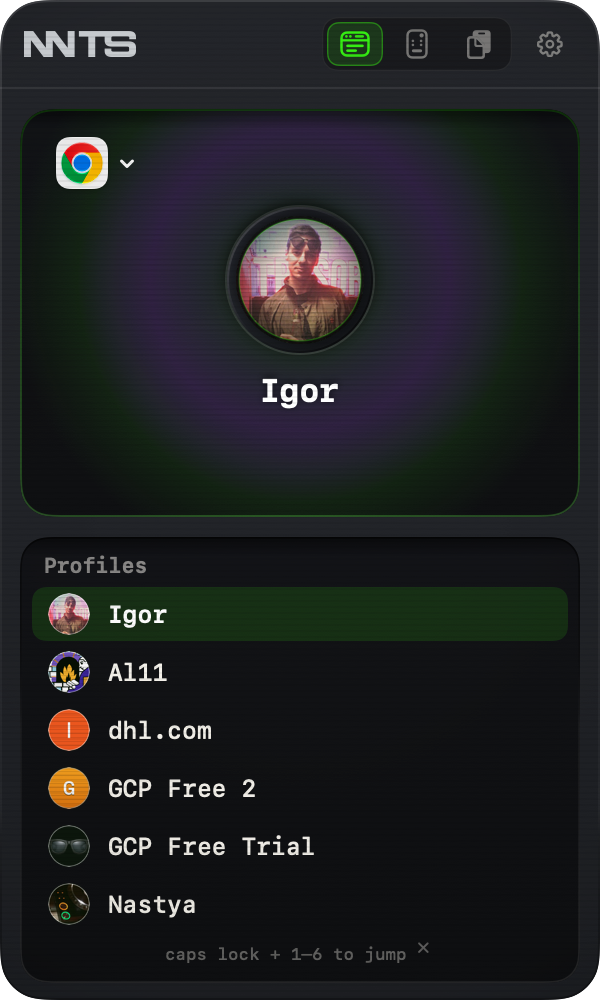
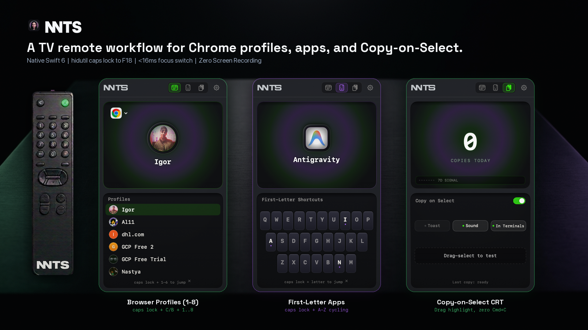

Control Mac windows
like TV channels.
Jump directly to Chrome or Brave profiles (1-8), cycle apps by first letter, and copy selected text from caps lock.
brew install ellisglass/tap/nnts

Three tools inside one menu bar remote.
Test the actual shortcuts and inspect genuine captures of the native NNTS chassis.
macOS bundles every Chrome or Brave profile window under one Command-Tab icon. NNTS addresses windows directly via Chromium's native Profiles menu attribute (kAXMenuBarAttribute), never brittle window titles.
Free includes 2 profile slots (1-2) and scroll-wheel picker. Pro unlocks up to 8 slots, Brave/Edge/Chromium switcher, and Avatar Assistant.
Zero Spotlight typing or Dock hunting. Hold caps lock and press any letter. Repeat presses cycle deterministically between apps sharing the same initial letter (1/2 to 2/2).
Free supports 5 pinned Quick Apps across A-Z (Browser Hub never consumes a slot). Pro unlocks all 26 letters with unlimited chains.
Highlight any text with a mouse drag (>10pt) or double-click. NNTS copies automatically when you release the mouse button, complete with trajectory-aware cursor toast and synthetic tape-snick sound.
brew install ellisglass/tap/nnts && xattr -cr /Applications/NNTS.app
Ready. Highlight text above.
STANDBY
Safety Vault immunity is 100% Free: 22+ password managers, secure input fields, spreadsheets, and CAD/DAW apps are always excluded. Pro adds In Terminals auto-copy and 7-day signal tracking.

Zero Electron. Native Swift 6 telemetry.
Hardware-level modifier remapping via macOS hidutil keeps the caps lock LED off without kernel extensions.

Free for your daily rig. $19 once for Pro.
All sound synthesis, trackpad haptics, caps lock driverless remapping, and Copy-on-Select password immunity stay free forever.
Built to feel instantaneous out of the box with zero registration.
- Complete acoustic & haptic CRT engine (<16ms)
- 2 browser profiles via
caps lock + 1-2& scroll picker - 5 Quick Apps across A-Z with full 1/N repeat cycling
- Auto Copy-on-Select, floating cursor toast, and full password-manager vault protection
- Manual Finder Window Tidy (
Tidy Now) - Offline operation, zero telemetry, zero Screen Recording
Unlock full multi-workspace throughput on up to 3 personal Macs.
- Everything in NNTS Free plus v1.x updates
- Up to 8 browser profile slots (
caps lock + 1-8) from 50 discovered - Chrome, Brave, Edge & Chromium switcher plus Avatar Capture Assistant
- Unlimited Quick Apps across all 26 letters A-Z
In Terminalsauto-copy, 7-day signal histogram, and clipboard preview- Background Finder Window Tidy daemon & offline Ed25519 license key
Install & macOS Gatekeeper
Universal macOS 14.0+ binary for Apple Silicon and Intel Macs. v1.0 ships locally signed without paid Apple Developer notarization.
- Download NNTS.dmg or install via Homebrew above, then drag NNTS.app to Applications.
- On first launch, right-click NNTS.app in Applications and choose Open, or run the
xattr -crcommand once to clear macOS quarantine. - Grant Accessibility permission when prompted so NNTS can bind
caps lockwithout green LED blink or accidental uppercase.
Privacy Policy
NNTS is engineered to operate locally inside your Mac's security boundary.
- Zero telemetry or analytics: NNTS runs no background usage tracking, crash reporters, or third-party SDKs.
- Zero Screen Recording permission: NNTS never calls screen capture APIs. Profile avatars import only from your clipboard (
Cmd+Ctrl+Shift+4) or chosen folders. - Password & sensitive field immunity: Copy-on-Select automatically ignores secure text inputs and 22+ password managers (1Password, Bitwarden, KeePassXC, Apple Passwords).
- User-initiated diagnostics only: Clicking Report Issue generates a PII-sanitized archive in Downloads for you to inspect before attaching anywhere.
- Offline Pro licensing: Pro keys verify offline via Ed25519 cryptography when present, with network calls occurring only on explicit key activation, deactivation, or manual update checks.